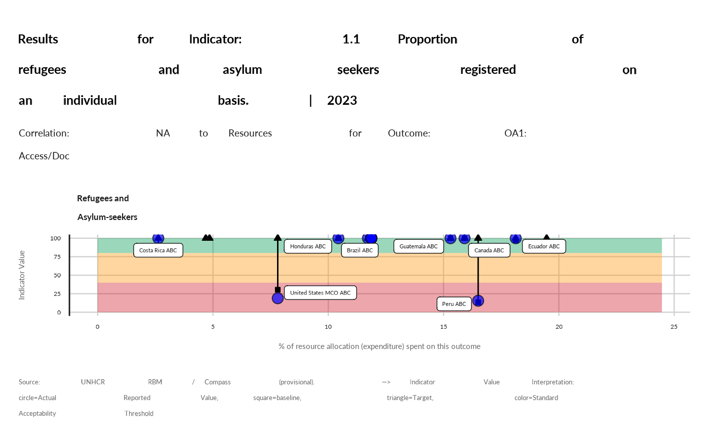
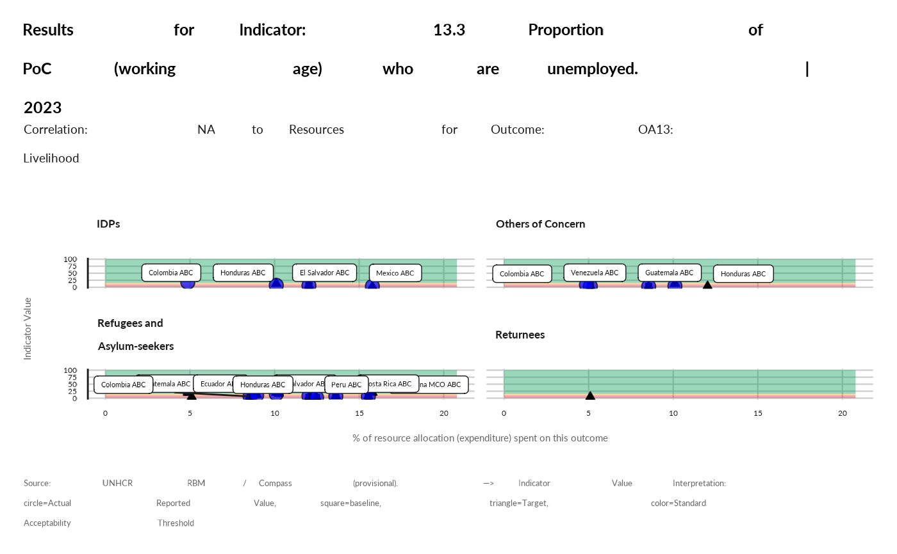

This display a charts to review jointly indicators and resource allocation
Arguments
- data
table resulting from prepare_qa_data()
- thisind
which indicator to chart
- budget
table from results.unhcr.org 4.6.1_Budget_Download.xlsx
- thisoutcome
which outcome to chart
- poptype
poptype filter - default is null
Examples
data <- prepare_qa_data(activityInfoTable= "cdn6y40lm87wi522")
knitr::kable(data |>
dplyr::filter(means_verification_results_level == "Outcome" ) |>
dplyr::arrange( means_verification_indicator_code) |>
dplyr::select( means_verification_outcome_area,
means_verification_indicator) |>
dplyr::distinct())
#>
#>
#> |means_verification_outcome_area |means_verification_indicator |
#> |:-------------------------------|:----------------------------------------------------------------------------------------------------------------------------------------------------------|
#> |OA1: Access/Doc |1.1 Proportion of refugees and asylum seekers registered on an individual basis. |
#> |OA1: Access/Doc |1.2 Proportion of children under 5 years of age whose births have been registered with a civil authority. [SDG 16.9.1 - Tier 1] |
#> |OA1: Access/Doc |1.3 Proportion of PoC with legally recognized identity documents or credentials [GCR 4.2.2]. |
#> |OA2: Status |2.1 Average processing time (in days) from registration to first instance asylum decision (disaggregated by individual and group procedures). |
#> |OA2: Status |2.2 Proportion of individuals undergoing asylum procedures who have access to legal advice or representation. |
#> |OA2: Status |2.3 Proportion of individuals undergoing asylum procedures who have access to an effective appeal mechanism after first instance rejection of their claim. |
#> |OA3: Policy/Law |3.1 Extent national legal framework is in line with the 1951 Convention and/or its 1967 Protocol. |
#> |OA3: Policy/Law |3.2 Extent national legal framework is in line with the 1961 Convention on the Reduction of Statelessness. |
#> |OA4: GBV |4.1 Proportion of PoC who know where to access available GBV services |
#> |OA4: GBV |4.2 Proportion of POCs who do not accept violence against women. |
#> |OA4: GBV |4.3 Proportion of survivors who are satisfied with SGBV case management services. |
#> |OA5: Children |5.1 Proportion of children at heightened risk who are supported by a Best Interests Procedure. |
#> |OA5: Children |5.2 Proportion of children who participate in community-based child protection programmes |
#> |OA5: Children |5.3 Proportion of unaccompanied and separated children who are in an appropriate alternative care arrangement |
#> |OA6: Justice |6.1 Number of PoC arrested or detained related to immigration control or legal status |
#> |OA7: Community |7.1 Extent participation of displaced and stateless people across programme phases is supported |
#> |OA7: Community |7.2 Proportion of PoC who have access to effective feedback and response mechanisms. |
#> |OA7: Community |7.3 Proportion (and number) of active female participants on leadership/management structures. |
#> |OA8: Well-being |8.1 Proportion of PoC in need that receive cash transfers or in-kind assistance. |
#> |OA8: Well-being |8.2 Proportion of PoC with primary reliance on clean (cooking) fuels and technology [SDG 7.1.2 Tier 1] |
#> |OA9: Housing |9.1 Proportion of PoCs living in habitable and affordable housing. |
#> |OA9: Housing |9.2 Proportion of PoC that have energy to ensure lighting (close to Sphere). |
#> |OA10: Health |10.1 Proportion of children aged 9 months to five years who have received measles vaccination. |
#> |OA10: Health |10.2. Proportion of births attended by skilled health personnel. [SDG 3.1.2 Tier 1] |
#> |OA11: Education |11.1 Proportion of PoC enrolled in tertiary and higher education. |
#> |OA11: Education |11.2 Proportion of PoC enrolled in the national education system. [GCR 2.2.1] |
#> |OA12: WASH |12.1 Proportion of PoC using at least basic drinking water services [linked to SDG 6.1.1]. |
#> |OA12: WASH |12.2 Proportion of PoC with access to a safe household toilet [linked to SDG 6.2.1]. |
#> |OA13: Livelihood |13.1. Proportion of PoC with an account at a bank or other financial institution or with a mobile-money-service provider [SDG 8.10.2 Tier 1]. |
#> |OA13: Livelihood |13.2. Proportion of PoC who self-report positive changes in their income compared to previous year. |
#> |OA13: Livelihood |13.3 Proportion of PoC (working age) who are unemployed. |
#> |OA14: Return |14.1 Proportion of returnees with legally recognized identity documents or credentials [GCR 4.2.2]. |
#> |OA15: Resettle |15.1 Number of refugees submitted by UNHCR for resettlement. |
#> |OA15: Resettle |15.2 Average processing time from resettlement submission to departure under normal priority. |
#> |OA15: Resettle |15.3 Number of PoC admitted through complementary pathways from the host country. |
#> |OA16: Integrate |16.1. Proportion of PoC with secure tenure rights and/or property rights to housing and/or land [revised SDG indicator 1.4.2]. |
#> |OA16: Integrate |16.2. Proportion of PoC covered by social protection floors/systems [SDG 1.3.1]. |
## budget data to be downloaded and save locally
budget <- readxl::read_excel( system.file("4.6.1_Budget_Download.xlsx", package = "ProgQA"), skip = 1)|>
#budget <- readxl::read_excel( here::here("data-raw", "4.6.1_Budget_Download.xlsx"), skip = 1)|>
janitor::clean_names()
result_resource(data,
budget,
thisind = "1.1 Proportion of refugees and asylum seekers registered on an individual basis.",
thisoutcome = "OA1: Access/Doc")
#> Warning: Removed 2 rows containing missing values (`geom_segment()`).
#> Warning: Removed 2 rows containing missing values (`geom_point()`).
#> Warning: Removed 3 rows containing missing values (`geom_point()`).
#> Warning: Removed 3 rows containing missing values (`geom_label_repel()`).
#> Warning: ggrepel: 8 unlabeled data points (too many overlaps). Consider increasing max.overlaps

result_resource(data, budget,
poptype = "Refugees and Asylum-seekers",
thisind = "13.3 Proportion of PoC (working age) who are unemployed.", thisoutcome = "OA13: Livelihood")
#> Warning: Removed 11 rows containing missing values (`geom_segment()`).
#> Warning: Removed 11 rows containing missing values (`geom_point()`).
#> Warning: Removed 1 rows containing missing values (`geom_point()`).
#> Warning: Removed 6 rows containing missing values (`geom_point()`).
#> Warning: Removed 6 rows containing missing values (`geom_label_repel()`).
#> Warning: ggrepel: 7 unlabeled data points (too many overlaps). Consider increasing max.overlaps
